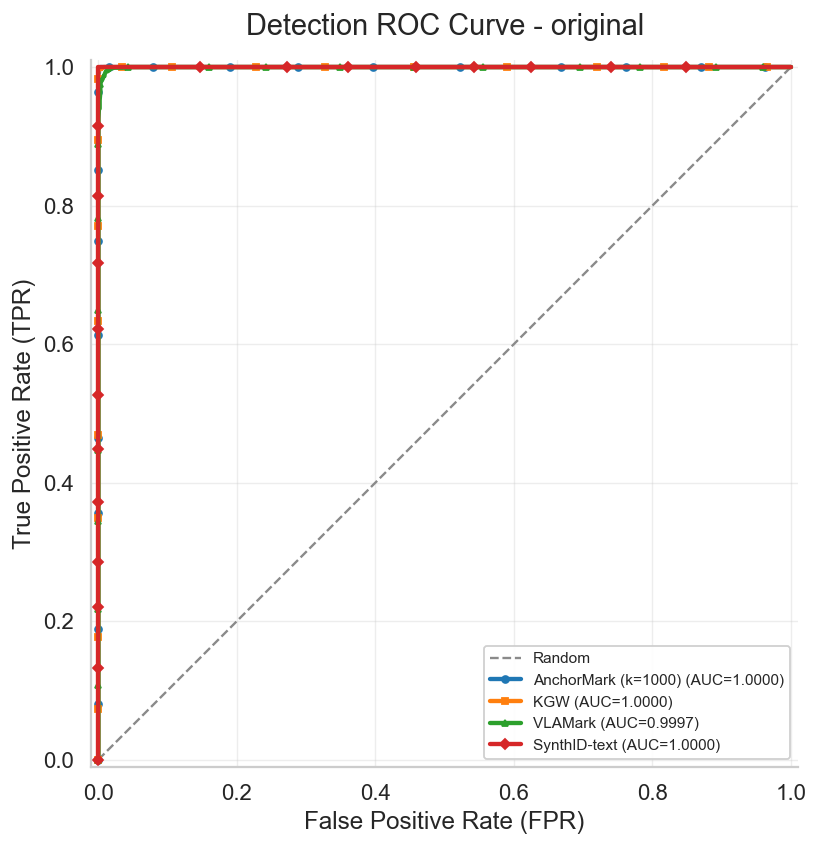
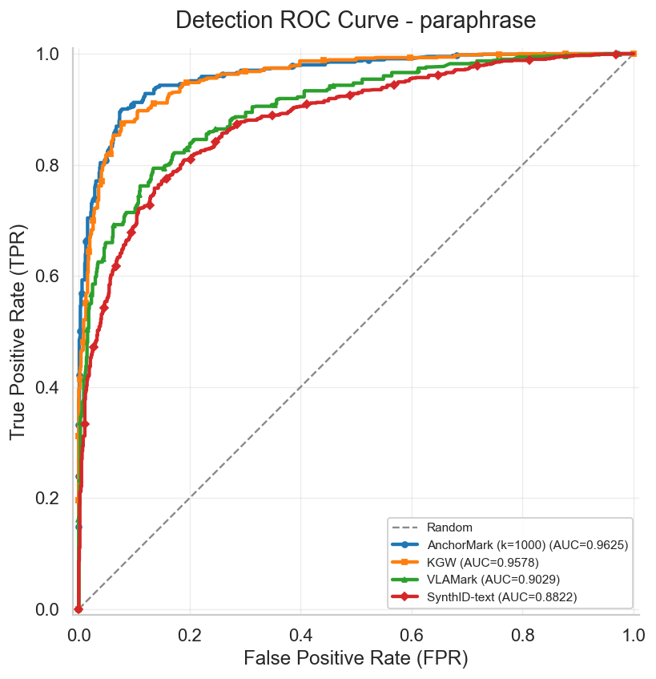

Grouped Bar Charts
Main Results
Watermarked
Paraphrased


Generated HTML
Watermark Experiment
Main result charts, CSV tables, and generated qualitative reports in one GitHub Pages-friendly view.
Grouped Bar Charts


Generated HTML